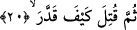

Bu sözler üzerine Kureyş: “Vallahi Velid dininden çıkıp bir başka dine girmiş; “Vallahi
Velid bu kavmin ileri gelen başkanı olduğu için bütün Kureyş ona uyarak saf
değiştirecek” derler. Bu söz üzerine Velid’in kardeşinin oğlu Ebû Cehil; “Ben onu
hâllederim”der. Gidip üzüntülü bir şekilde Velid’in yanında oturur ve onu kızdıracak ve
öfkelendirecek şeyler söyler.
“Kureyşliler;
onların
yiyeceklerinin
fazlasından
nasiplenmek
için,
senin
Muhammed’in sözlerini beğendiğini, onu büyük gördüğünü ve ona senâda bulunduğunu
söylüyorlar” dedi. “Eğer böyleyse, Kureyş bir araya gelir, sana yetecek yiyeceği temin
eder, böylece onların yiyeceğine ihtiyacın kalmaz.” Velîd Ebû Cehil’den bu sözü
işitince öfkelendi ve şöyle dedi: “Sen bilmez misin? Ben mal ve evlâd bakımından
Kureyş’ten daha zenginim. Muhammed’in ashâbı ise daha kendi karnını doyuramıyor,
fakr ü zarûretten rahat yüzü görmüyorlar. Bunlardan yiyeceğin arttığına hattâ başkalarına
verdiklerine nasıl inanırsın?” Sonra her ikisi kalkıp Kureyş meclisine gittiler. Velîd
şöyle dedi: “Siz Kureyşsiniz ve biliyorsunuz ki bu Muhammed’in şânı ve risâleti
Araplar arasında yayılmaktadır. Hac mevsimi yakındır, Araplar gelip onun durumunu
sorduğunda onlara ne cevap vereceksiniz?”
Velid onlara şöyle söyler: “Siz Muhammed’in deli olduğunu iddiâ ediyorsunuz. Hiç
onun boğulduğunu gördünüz mü? -Araplar şeytanın deliyi boğduğuna ve onu çarptığına
inanırlardı. Onun kâhin olduğunu söylüyorsunuz, onu kâhinlik yaparken hiç gördünüz
mü? Onun şâir olduğunu iddiâ ediyorsunuz onu şiir söylerken hiç gördünüz mü? Onun
yalancı olduğunu iddiâ ediyorsunuz hiç onun yalan söylediğini müşâhede ettiniz mi?”
Araplar bu soruların hepsine “hayır” diyorlardı. Daha sonra araplar; “öyleyse o ne?
onun hakkında ne diyorsun?” dediler. Velid düşündü ve: “O sâdece bir sihirbazdır,
görmez misiniz kocayla karısının, çocuklarının ve dostlarının arasını ayırıyor. Onun
söyledikleri sihirden başka birşey değil. Bunu Babil’lilerden naklediyor” der. Bunun
üzerine toplantı yeri sevinçle çalkalanır. Oradakiler Velid’in dediklerini beğenerek,
ondan râzı ve hoşnud bir şekilde oradan dağılırlar.
20. Sonra, canı çıkasıca tekrar (ölçtü biçti); nasıl ölçtü biçtiyse!
Bu ifâde, kötüleme hususundaki mübâlağaya taaccup için tekrar edilmiştir. “Sümme”
edâtı ise ikinci kez yapılan bu bedduânın birinciden daha ileri olduğunu ifâde etmek için
getirilmiştir. Onun hakkında lâyık olan ancak bu bedduâ cümlesidir. Bundan sonra gelen
“sümme” ise -aslına uygun olarak- zaman yönünden öncelik ve sonralık ifâde etmesi
içindir.